Cachapas venezolanas
Receta tradicional venezolana a base de maíz
Ingredientes:
- 1/4 de taza de leche
- 1 cucharada de maicena
- 3 cucharadas de azúcar
- Opcional: si la mezcla está muy líquida, puedes adicionar unas cucharas de harinas P.A.N
Para el relleno:
- Queso blanco telita
- Mantequilla al gusto
- Jamón o Pernil
- Caraotas
- Tajadas
 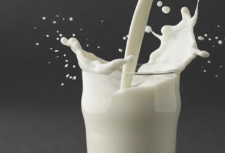
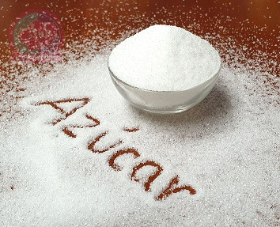
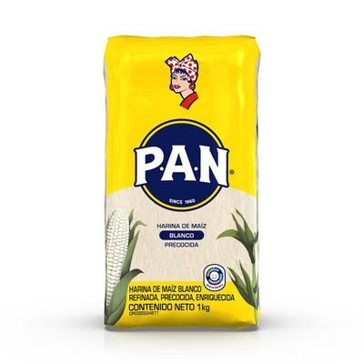
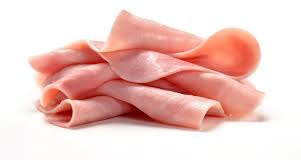
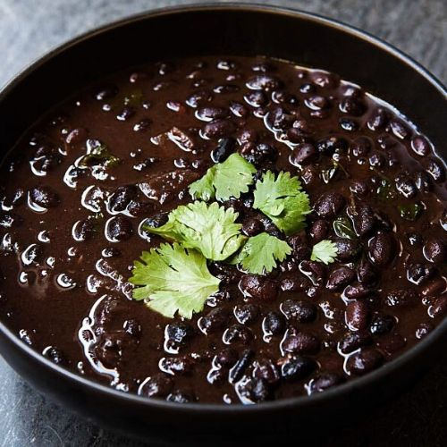
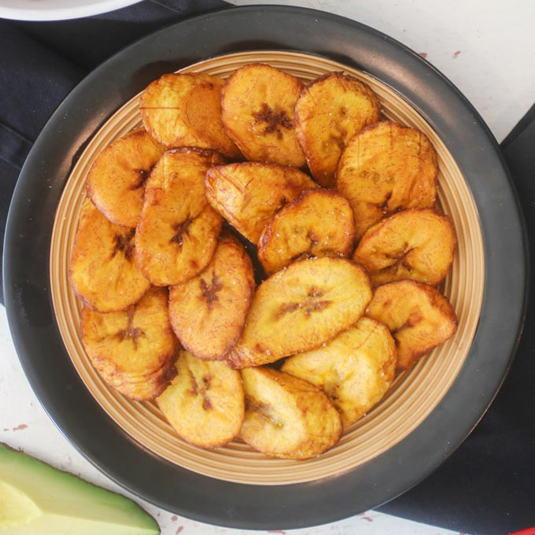
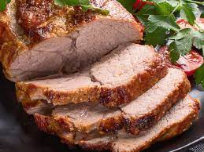
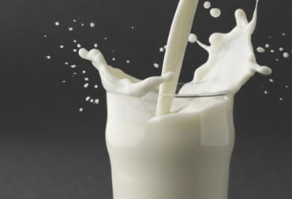
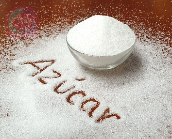
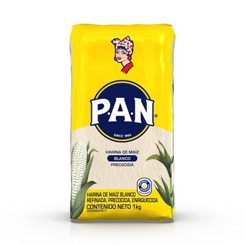
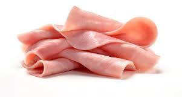
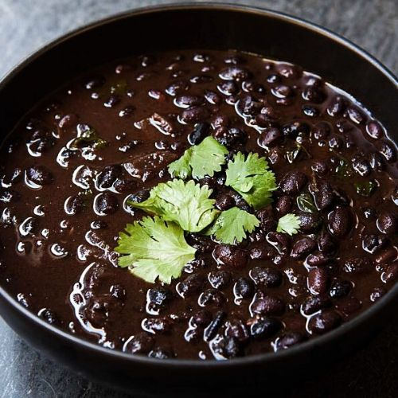
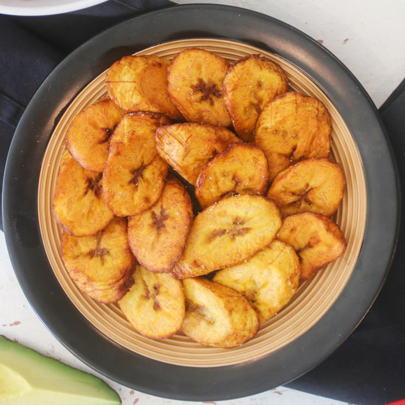
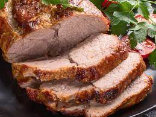
Preparación
- Pele los jojotos y lave bajo agua corriente. Retire las barbas cuidadosamente y cualquier otra impureza.
Desgránelos, para esto debe colocar los jojotos sobre una superficie plana y cortar con un cuchillo afilado al ras, intentando obtener la mayor cantidad de granos enteros posible. En total necesitara el equivalente a tres tazas de granos de jojoto. Quizá esta es la parte más laboriosa de la receta, el resto puede ser bastante similar a la elaboración de panquecas.
En la licuadora coloque primero los ingredientes húmedos y revuelva muy bien con el azúcar. Luego incorpore los granos de maíz poco a poco. Licue a velocidad media, si es necesario incorpore intervalos de reposo porque la mezcla de las cachapas es muy densa. Esta mezcla puede ser conservada dentro de un envase tapado en el refrigerador hasta tres días. Es decir, que, para su comodidad, usted puede preparar la mezcla la noche anterior y para el desayuno solo asar las cachapas.
Encienda la cocina a fuego medio alto, y coloque una plancha de teflón, rocié con un poco de aceite. Ponga la mezcla para cachapas y esparza cuidadosamente, la cachapa debe tener un espesor de 5 milímetros.
Cocine tapada por tres minutos, cuando tenga burbujitas en la superficie, voltéela con la ayuda de una espátula. Cocine por tres minutos más y traslade al plato.
Sobre la mitad de la cachapa, ponga una cucharada de mantequilla y queso a su gusto, cubra con la otra mitad de la cachapa, la cachapa tendrá forma de media luna.
Disfrute caliente; si lo desea puede rellenar con queso amarillo, jamón o hasta pernil.